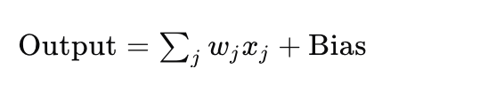
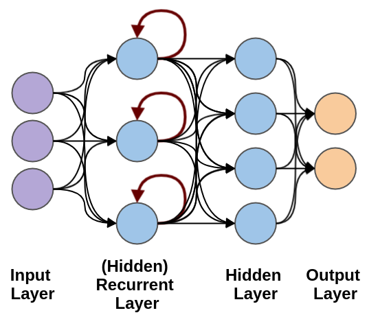
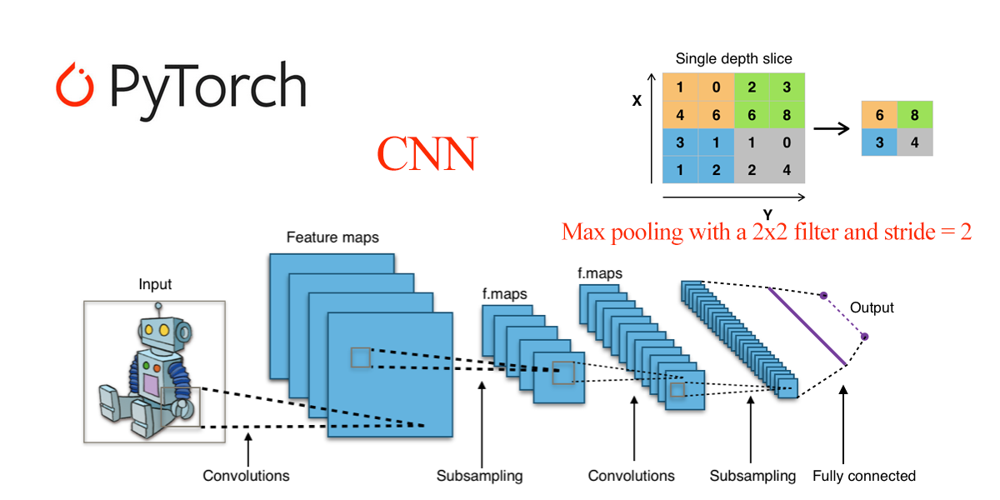

Fundamentos de redes neuronales en PyTorch
Una red neuronal es un modelo computacional que imita la forma en que el cerebro humano procesa la información. Está compuesta por muchos nodos interconectados (neuronas) que se organizan en capas.
La fortaleza de las redes neuronales radica en su capacidad para aprender automáticamente patrones y características complejas a partir de grandes volúmenes de datos, sin necesidad de diseñar extractores de características manualmente.
Con el desarrollo del aprendizaje profundo, las redes neuronales se han convertido en una tecnología clave para resolver muchos problemas complejos.
Neurona
La neurona es la unidad básica de una red neuronal. Recibe señales de entrada, las suma ponderadamente junto con el sesgo (bias) y luego las procesa mediante una función de activación para producir una salida.
Los pesos y los sesgos de las neuronas son los parámetros que deben ajustarse durante el proceso de aprendizaje de la red.
Entrada y salida:
- Entrada: La entrada es el punto de inicio de la red; puede ser datos de características, como los valores de píxeles de una imagen o los vectores de palabras de un texto.
- Salida: La salida es el punto final de la red y representa el resultado de predicción del modelo, como las etiquetas de clase en tareas de clasificación.
Una neurona recibe múltiples entradas (por ejemplo, x1, x2, ..., xn). Si la suma ponderada de las entradas supera el umbral de activación (activation potential), produce una salida binaria.

La salida de una neurona puede considerarse como la suma ponderada de las entradas más el sesgo (bias). La representación matemática de una neurona es:

Aquí,wjson los pesos,xjson las entradas, yBiases el término de sesgo.
Capa
Las capas entre la capa de entrada y la capa de salida se denominan capas ocultas. La densidad y el tipo de conexiones entre capas constituyen la configuración de la red.
Una red neuronal está compuesta por varias capas, incluyendo:
- Capa de entrada: recibe los datos de entrada originales.
- Capa oculta: procesa los datos de entrada; puede haber múltiples capas ocultas.
- Capa de salida: produce el resultado final.
Arquitectura típica de una red neuronal:

Diagrama de demostración:
Red neuronal feedforward (Feedforward Neural Network, FNN)
La red neuronal feedforward (Feedforward Neural Network, FNN) es una unidad básica en la familia de las redes neuronales.
La característica de la red neuronal feedforward es que los datos comienzan en la capa de entrada, pasan por una o más capas ocultas y finalmente llegan a la capa de salida; en todo el proceso no hay bucles ni retroalimentación.

Estructura básica de la red neuronal feedforward:
-
Capa de entrada:Es el punto de entrada de los datos a la red. Cada nodo de la capa de entrada representa una característica de entrada.
Capa oculta:Una o más capas utilizadas para capturar características no lineales de los datos. Cada capa oculta está compuesta por múltiples neuronas, y cada neurona incrementa la capacidad no lineal mediante una función de activación.
Capa de salida:Produce el resultado de predicción de la red. El número de nodos está relacionado con el tipo de problema; por ejemplo, en problemas de clasificación, el número de nodos de salida es igual al número de clases.
Pesos de conexión y sesgos:Las entradas de cada neurona se suman ponderadamente mediante los pesos, se añade el valor del sesgo y luego se transmiten a través de una función de activación.
Red neuronal recurrente (Recurrent Neural Network, RNN)
La red neuronal recurrente (Recurrent Neural Network, RNN) es un tipo de red neuronal especializada en procesar datos secuenciales, capaz de capturar las dependencias de información temporal o de orden en los datos de entrada.
Lo especial de la RNN es que tiene “capacidad de memoria”, ya que puede almacenar información de pasos de tiempo anteriores en el estado oculto de la red.
Las redes neuronales recurrentes se utilizan para procesar patrones de datos que cambian con el tiempo.
En una RNN, la misma capa se utiliza para recibir los parámetros de entrada y mostrar los parámetros de salida en la red neuronal especificada.

PyTorch proporciona herramientas potentes para construir y entrenar redes neuronales.
Las redes neuronales en PyTorch se implementan mediante eltorch.nnmódulo.
torch.nnEl módulo proporciona diversas capas de red (como capas completamente conectadas, capas convolucionales, etc.), funciones de pérdida y optimizadores, lo que facilita la construcción y el entrenamiento de redes neuronales.

En PyTorch, para construir una red neuronal, normalmente es necesario heredar de la clase nn.Module.
nn.Module es la clase base de todos los módulos de redes neuronales. Debes definir las siguientes dos partes:
__init__(): definir las capas de la red.forward(): definir el proceso de propagación hacia adelante de los datos.
Una red neuronal totalmente conectada simple (Fully Connected Network):
Ejemplo
import torch.nn as nn
# Definir un modelo de red neuronal simple
class SimpleNN(nn.Module):
def __init__(self):
super(SimpleNN, self).__init__()
# Definir una capa totalmente conectada de entrada a oculta
self.fc1 = nn.Linear(2, 2) # Entrada de 2 características, salida de 2 características
# Definir una capa totalmente conectada de oculta a salida
self.fc2 = nn.Linear(2, 1) # Entrada de 2 características, salida de 1 valor de predicción
def forward(self, x):
# Proceso de propagación hacia adelante
x = torch.relu(self.fc1(x)) # Usar la función de activación ReLU
x = self.fc2(x) # Capa de salida
return x
# Crear la instancia del modelo
model = SimpleNN()
# Imprimir el modelo
print(model)
El resultado de salida es el siguiente:
SimpleNN( (fc1): Linear(in_features=2, out_features=2, bias=True) (fc2): Linear(in_features=2, out_features=1, bias=True) )
PyTorch proporciona muchas capas de red neuronal comunes. A continuación se presentan algunas de las más comunes:
nn.Linear(in_features, out_features): capa totalmente conectada, entradain_featurescaracterísticas, salidaout_featurescaracterísticas.nn.Conv2d(in_channels, out_channels, kernel_size): capa convolucional 2D, utilizada para procesamiento de imágenes.nn.MaxPool2d(kernel_size): capa de agrupación máxima 2D, utilizada para reducir la dimensionalidad.nn.ReLU(): función de activación ReLU, utilizada comúnmente en capas ocultas.nn.Softmax(dim): función de activación Softmax, generalmente utilizada en la capa de salida, adecuada para problemas de clasificación multiclase.
Función de activación (Activation Function)
La función de activación determina si una neurona debe activarse. Son funciones no lineales que permiten a la red neuronal aprender y realizar tareas más complejas. Las funciones de activación comunes incluyen:
- Sigmoid: se utiliza en problemas de clasificación binaria, con valores de salida entre 0 y 1.
- Tanh: los valores de salida están entre -1 y 1; se utiliza a menudo antes de la capa de salida.
- ReLU (Rectified Linear Unit): una de las funciones de activación más populares actualmente, se define como
f(x) = max(0, x), ayuda a resolver el problema de la desaparición del gradiente. - Softmax: se utiliza comúnmente en la capa de salida de problemas de clasificación multiclase, convirtiendo la salida en una distribución de probabilidad.
Ejemplo
# Activación ReLU
output = F.relu(input_tensor)
# Activación Sigmoid
output = torch.sigmoid(input_tensor)
# Activación Tanh
output = torch.tanh(input_tensor)
Función de pérdida (Loss Function)
La función de pérdida se utiliza para medir la diferencia entre los valores predichos por el modelo y los valores reales.
Las funciones de pérdida comunes incluyen:
- Error cuadrático medio (MSELoss): común en problemas de regresión, calcula la diferencia al cuadrado entre la salida y el valor objetivo.
- Pérdida de entropía cruzada (CrossEntropyLoss): común en problemas de clasificación, calcula la entropía cruzada entre la salida y las etiquetas reales.
- BCEWithLogitsLoss: para problemas de clasificación binaria, combina la activación Sigmoid y la pérdida de entropía cruzada binaria.
Ejemplo
criterion = nn.MSELoss()
# Pérdida de entropía cruzada
criterion = nn.CrossEntropyLoss()
# Pérdida de entropía cruzada binaria
criterion = nn.BCEWithLogitsLoss()
Optimizador
El optimizador se encarga de actualizar los pesos y los sesgos de la red durante el proceso de entrenamiento.
Los optimizadores comunes incluyen:
- SGD (Descenso de gradiente estocástico)
- Adam (Estimación adaptativa de momentos)
- RMSprop (Propagación de la raíz cuadrada media)
Ejemplo
# Usar el optimizador SGD
optimizer = optim.SGD(model.parameters(), lr=0.01)
# Usar el optimizador Adam
optimizer = optim.Adam(model.parameters(), lr=0.001)
Proceso de entrenamiento
Entrenar una red neuronal implica los siguientes pasos:
- Preparar los datos: a través de
DataLoadercargar los datos. - Definir la función de pérdida y el optimizador。
- Propagación hacia adelante: calcular la salida del modelo.
- Calcular la pérdida: comparar con el objetivo y obtener el valor de pérdida.
- Propagación hacia atrás: a través de
loss.backward()calcular los gradientes. - Actualizar los parámetros: a través de
optimizer.step()actualizar los parámetros del modelo. - Repetir los pasos anterioreshasta alcanzar el número predeterminado de épocas de entrenamiento.
Ejemplo
# Ejemplo de datos de entrenamiento
X = torch.randn(10, 2) # 10 muestras, cada una con 2 características
Y = torch.randn(10, 1) # 10 etiquetas objetivo
# Proceso de entrenamiento
for epoch in range(100): # Entrenar durante 100 épocas
model.train() # Configurar el modelo en modo de entrenamiento
optimizer.zero_grad() # Limpiar los gradientes
output = model(X) # Propagación hacia adelante
loss = criterion(output, Y) # Calcular la pérdida
loss.backward() # Propagación hacia atrás
optimizer.step() # Actualizar los pesos
if (epoch + 1) % 10 == 0: # Imprimir la pérdida cada 10 épocas
print(f'Epoch [{epoch + 1}/100], Loss: {loss.item():.4f}')
Pruebas y evaluación
Después del entrenamiento, es necesario probar y evaluar el modelo.
Los pasos comunes incluyen:
- Calcular la pérdida en el conjunto de prueba: evaluar el rendimiento del modelo en datos no vistos.
- Calcular la precisión (Accuracy): para problemas de clasificación, calcular la proporción de predicciones correctas.
Ejemplo
model.eval() # Configurar el modelo en modo de evaluación
with torch.no_grad(): # Deshabilitar el cálculo de gradientes durante la evaluación
output = model(X_test)
loss = criterion(output, Y_test)
print(f'Test Loss: {loss.item():.4f}')
Tipos de redes neuronales
- Redes neuronales de avance directo (Feedforward Neural Networks): los datos fluyen en una sola dirección, desde la capa de entrada hasta la capa de salida, sin conexiones de retroalimentación.
- Redes neuronales convolucionales (Convolutional Neural Networks, CNNs): adecuadas para el procesamiento de imágenes, utilizan capas convolucionales para extraer características espaciales.
- Redes neuronales recurrentes (Recurrent Neural Networks, RNNs): adecuadas para datos secuenciales, como análisis de series temporales y procesamiento de lenguaje natural, permiten bucles de retroalimentación de información.
- Redes de memoria a largo plazo (Long Short-Term Memory, LSTM): un tipo especial de RNN que puede aprender dependencias a largo plazo.
Referencia de torch.nn
A continuación se presentan las más utilizadas en PyTorchtorch.nnfunciones y clases:
Fundamentos de definición de modelos
| Función | Descripción | Ejemplo |
|---|---|---|
| nn.Module | Clase base de todos los módulos de redes neuronales | class Net(nn.Module): ... |
| nn.Sequential | Contenedor secuencial que ejecuta las capas en orden | nn.Sequential(conv, relu, pool) |
| nn.ModuleList | Almacena los submódulos en una lista | self.layers = nn.ModuleList([...]) |
| nn.Parameter | Crea un tensor de parámetros aprendibles | self.w = nn.Parameter(torch.randn(n)) |
Capas convolucionales
| Función | Descripción | Ejemplo |
|---|---|---|
| nn.Conv1d | Convolución 1D (texto, audio) | nn.Conv1d(3, 64, 3) |
| nn.Conv2d | Convolución 2D (imágenes) | nn.Conv2d(3, 64, 3, padding=1) |
| nn.Conv3d | Convolución 3D (videos) | nn.Conv3d(3, 64, 3) |
| nn.ConvTranspose2d | Convolución transpuesta (decodificadores, sobremuestreo) | nn.ConvTranspose2d(64, 3, 2, stride=2) |
Capas de pooling
| Función | Descripción | Ejemplo |
|---|---|---|
| nn.MaxPool2d | Max pooling 2D | nn.MaxPool2d(2, 2) |
| nn.AvgPool2d | Average pooling 2D | nn.AvgPool2d(2, 2) |
| nn.AdaptiveAvgPool2d | Adaptive average pooling (tamaño de salida fijo) | nn.AdaptiveAvgPool2d((1, 1)) |
| nn.AdaptiveMaxPool2d | Adaptive max pooling (tamaño de salida fijo) | nn.AdaptiveMaxPool2d((1, 1)) |
Capas lineales
| Función | Descripción | Ejemplo |
|---|---|---|
| nn.Linear | Capa totalmente conectada (transformación lineal) | nn.Linear(128, 64) |
| nn.Bilinear | Capa bilineal | nn.Bilinear(128, 64, 32) |
| Función | Descripción | Ejemplo |
| nn.ReLU | Función de activación ReLU, f(x) = max(0, x) | nn.ReLU() |
| nn.GELU | Unidad lineal de error gaussiano (predeterminada en Transformers) | nn.GELU() |
| nn.SiLU | Función de activación Swish | nn.SiLU() |
| nn.Tanh | Tangente hiperbólica | nn.Tanh() |
| nn.Sigmoid | Función de activación Sigmoid | nn.Sigmoid() |
| nn.Softmax | Función de activación Softmax | nn.Softmax(dim=1) |
| nn.LogSoftmax | Log Softmax (numéricamente estable) | nn.LogSoftmax(dim=1) |
| nn.LeakyReLU | LeakyReLU, permite un pequeño gradiente para valores negativos | nn.LeakyReLU(0.01) |
| nn.ELU | Unidad lineal exponencial | nn.ELU() |
Capas de normalización
| Función | Descripción | Ejemplo |
|---|---|---|
| nn.BatchNorm2d | Batch normalization 2D (común en redes convolucionales) | nn.BatchNorm2d(64) |
| nn.LayerNorm | Layer normalization (común en Transformers) | nn.LayerNorm(512) |
| nn.GroupNorm | Group normalization (común en ResNet, etc.) | nn.GroupNorm(4, 64) |
| nn.InstanceNorm2d | Instance normalization (común en transferencia de estilo) | nn.InstanceNorm2d(64) |
Capas recurrentes
| Función | Descripción | Ejemplo |
|---|---|---|
| nn.LSTM | Capa LSTM (memoria a largo plazo) | nn.LSTM(256, 512, 2) |
| nn.GRU | Capa GRU (unidad recurrente cerrada) | nn.GRU(256, 512, 2) |
| nn.RNN | Capa RNN simple | nn.RNN(256, 512, 2) |
Capas Transformer
| Función | Descripción | Ejemplo |
|---|---|---|
| nn.Transformer | Modelo Transformer completo | nn.Transformer(d_model=512, nhead=8) |
| nn.TransformerEncoder | Codificador Transformer | nn.TransformerEncoder(layer, num_layers=6) |
| nn.TransformerDecoder | Decodificador Transformer | nn.TransformerDecoder(layer, num_layers=6) |
| nn.TransformerEncoderLayer | Capa de codificador Transformer | nn.TransformerEncoderLayer(512, 8) |
| nn.MultiheadAttention | Mecanismo de atención de múltiples cabezas | nn.MultiheadAttention(512, 8) |
Capas de embedding
| Función | Descripción | Ejemplo |
|---|---|---|
| nn.Embedding | Capa de embedding (mapea palabras a vectores) | nn.Embedding(10000, 256) |
| nn.EmbeddingBag | Embedding bag (agrega múltiples embeddings) | nn.EmbeddingBag(10000, 256) |
Capas Dropout
| Función | Descripción | Ejemplo |
|---|---|---|
| nn.Dropout | Dropout aleatorio (previene el sobreajuste) | nn.Dropout(0.5) |
| nn.Dropout2d | Dropout 2D (descarte por mapa de características) | nn.Dropout2d(0.5) |
Funciones de pérdida
| Función | Descripción | Ejemplo |
|---|---|---|
| nn.CrossEntropyLoss | Pérdida de entropía cruzada (clasificación multiclase) | nn.CrossEntropyLoss() |
| nn.MSELoss | Pérdida de error cuadrático medio (regresión) | nn.MSELoss() |
| nn.L1Loss | Pérdida L1 (MAE) | nn.L1Loss() |
| nn.BCEWithLogitsLoss | Entropía cruzada binaria con Sigmoid | nn.BCEWithLogitsLoss() |
| nn.HuberLoss | Pérdida de Huber (regresión robusta) | nn.HuberLoss() |
| nn.NLLLoss | Pérdida de log-verosimilitud negativa | nn.NLLLoss() |
Funciones funcionales (nn.functional)
| Función | Descripción | Ejemplo |
|---|---|---|
F.relu |
Activación ReLU | F.relu(x) |
F.gelu |
Activación GELU | F.gelu(x) |
F.sigmoid |
Activación Sigmoid | F.sigmoid(x) |
F.softmax |
Activación Softmax | F.softmax(x, dim=1) |
F.dropout |
Operación Dropout | F.dropout(x, 0.5, training) |
F.conv2d |
Convolución 2D | F.conv2d(x, weight, bias) |
F.linear |
Transformación lineal | F.linear(x, weight, bias) |
F.cross_entropy |
Pérdida de entropía cruzada | F.cross_entropy(logits, targets) |
F.mse_loss |
Pérdida de error cuadrático medio | F.mse_loss(pred, target) |
F.interpolate |
Interpolación (sobremuestreo/submuestreo) | F.interpolate(x, scale_factor=2) |
F.embedding |
Operación de embedding | F.embedding(indices, weight) |
Funciones de utilidad (nn.init)
| Función | Descripción | Ejemplo |
|---|---|---|
nn.init.xavier_uniform_ |
Inicialización uniforme de Xavier | nn.init.xavier_uniform_(module.weight) |
nn.init.xavier_normal_ |
Inicialización normal de Xavier | nn.init.xavier_normal_(module.weight) |
nn.init.kaiming_uniform_ |
Inicialización uniforme de Kaiming (adecuada para ReLU) | nn.init.kaiming_uniform_(module.weight) |
nn.init.kaiming_normal_ |
Inicialización normal de Kaiming (adecuada para ReLU) | nn.init.kaiming_normal_(module.weight) |
nn.init.zeros_ |
Inicialización con ceros | nn.init.zeros_(module.bias) |
nn.init.normal_ |
Inicialización normal | nn.init.normal_(module.weight, 0, 0.01) |
Funciones de utilidad (nn.utils)
| Función | Descripción | Ejemplo |
|---|---|---|
nn.utils.clip_grad_norm_ |
Recorte de la norma del gradiente (previene la explosión de gradientes) | nn.utils.clip_grad_norm_(model.parameters(), 1.0) |
nn.utils.weight_norm |
Normalización de pesos | nn.utils.weight_norm(module, 'weight') |
nn.utils.spectral_norm |
Normalización espectral (común en GAN) | nn.utils.spectral_norm(module, 'weight') |
nn.utils.rnn.pack_padded_sequence |
Empaquetar secuencias de longitud variable | pack_padded_sequence(x, lengths) |
nn.utils.rnn.pad_packed_sequence |
Desempaquetar secuencias | pad_packed_sequence(packed) |
Haz clic para compartir mis notas
<p style="font-size:14px;">¡Las notas deben ser una extensión del contenido de este artículo!</p><br> <p style="font-size:12px;"><a href="../tougao.html" target="_blank">Envío de artículos, haga clic aquí</a></p> <p style="font-size:14px;"><a href="../w3cnote/runoob-user-test-intro.html" target="_blank">Cómo obtener el código de invitación de registro</a></p> <h3 class="text-muted"><i class="fa fa-info-circle" aria-hidden="true"></i> ¡Debe <a href=";.html" class="runoob-pop">iniciar sesión</a> antes de compartir notas!</h3> <p><a href="../w3cnote/runoob-user-test-intro.html" target="_blank">Cómo obtener el código de invitación de registro</a></p>